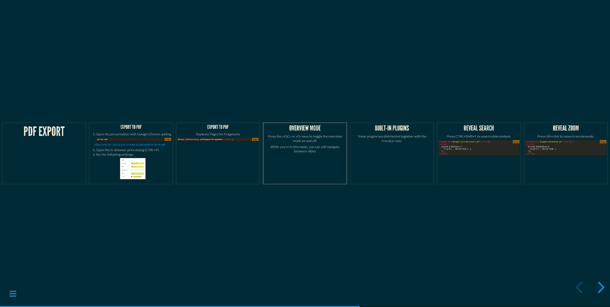
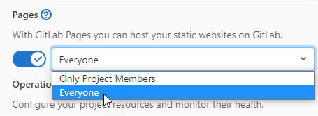
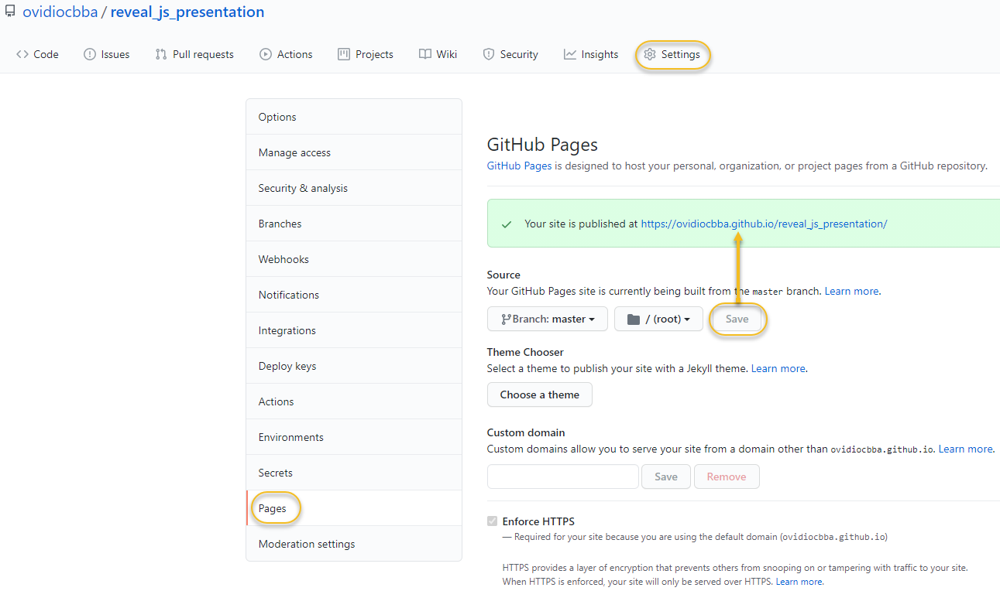

Presentation URL
QR Code:
A Framework For Amazing HTML Presentation
Presentation created by: Simón Ovidio Miranda Chiri /ovidio.miranda@jalasoft.com GitHub repository
Agenda
Agenda
Agenda
Introduction
Introduction
Framework for creating presentations using HTML.

Introduction
It's open source, developed by the Hakim El Hattab.

Introduction
Presentations are responsive styling to the device on which they are viewed.

Installation
Installation
- 1. Download the latest reveal.js version.
- 2. Unzip and replace the example contents in index.html with your own.
- 3. Open index.html in a browser to view it.
https://github.com/hakimel/reveal.js/archive/master.zip
That's it 🚀.
index.html
Backgrounds
Slide Backgrounds
With data-background you can change the background color of a specific slide. All CSS colors are supported
Slide Backgrounds
Image Backgrounds
You can also change the background image of a slide.
Image Backgrounds
GIF Backgrounds
GIF Backgrounds
Video Backgrounds
Video Backgrounds
Background Transitions
You can override background transitions per-slide.
Background Transitions
Media
Video
Code
Pretty Code
Make sure that a syntax highlight theme is included.
Add CSS import:
Add Script file import:
Pretty Code
Code syntax highlighting courtesy of highlight.js.
public int getAverage(int[] marks) {
return (int) IntStream.of(marks).average().orElse(Double.NaN);
}
Pretty Code
public Boolean validate(String eanCode) {
String twelveDigits = eanCode.substring(0, eanCode.length() - 1);
int result = Stream.of(twelveDigits.split(""))
.mapToInt(Integer::parseInt)
.map(number -> number % TWO == 0 ? number : number * TREE)
.sum();
int calcChecksum = (result % TEN == 0) ? 0 : TEN - (result % TEN);
int lastNumber = Integer.parseInt(eanCode.substring(eanCode.length() - 1));
return calcChecksum == lastNumber;
}
Math
Math
If you want to display math equations in your presentation you can easily do so with the MathJax plugin
Add Script file import:
Math
The Lorenz Equations
\[\begin{aligned} \dot{x} & = \sigma(y-x) \\ \dot{y} & = \rho x - y - xz \\ \dot{z} & = -\beta z + xy \end{aligned} \]Math
The Cauchy-Schwarz Inequality
\[ \left( \sum_{k=1}^n a_k b_k \right)^2 \leq \left( \sum_{k=1}^n a_k^2 \right) \left( \sum_{k=1}^n b_k^2 \right) \]Math
A Cross Product Formula
\[\mathbf{V}_1 \times \mathbf{V}_2 = \begin{vmatrix} \mathbf{i} & \mathbf{j} & \mathbf{k} \\ \frac{\partial X}{\partial u} & \frac{\partial Y}{\partial u} & 0 \\ \frac{\partial X}{\partial v} & \frac{\partial Y}{\partial v} & 0 \end{vmatrix} \]Math
Maxwell’s Equations
\[ \begin{aligned} \nabla \times \vec{\mathbf{B}} -\, \frac1c\, \frac{\partial\vec{\mathbf{E}}}{\partial t} & = \frac{4\pi}{c}\vec{\mathbf{j}} \\ \nabla \cdot \vec{\mathbf{E}} & = 4 \pi \rho \\ \nabla \times \vec{\mathbf{E}}\, +\, \frac1c\, \frac{\partial\vec{\mathbf{B}}}{\partial t} & = \vec{\mathbf{0}} \\ \nabla \cdot \vec{\mathbf{B}} & = 0 \end{aligned} \]Fragments
Fragments
Hit the next arrow...
... to step through ...
... a fragmented slide.
Fragments
Example:
Fragment 1
Fragment 2
Fragment 3
Fragment 1
Fragment 2
Fragment 3
Fragment Styles
There's different types of fragments, like:
grow
shrink
strike
grow
shrink
strike
Fragment Styles
fade-right
fade-up
fade-down
fade-left
fade-right
fade-up
fade-down
fade-left
Fragment Styles
Fade in
Fade out
Fade in, then out
Fade in, then semi out
Fade in
Fade out
Fade in, then out
Fade in, then semi out
Fragment Styles
Highlight red
Highlight green
Highlight blue
Highlight red
Highlight green
Highlight blue
Lists
Unordered List
- Coffee
- Tea
- Milk
- Coffee
- Tea
- Milk
Ordered List
- HTML
- Java
- JavaScript
- SQL
- HTML
- Java
- JavaScript
- SQL
Description Lists
- Bread
- A baked food made of flour.
- Coffee
- A drink made from roasted coffee beans.
- Bread
- A baked food made of flour.
- Coffee
- A drink made from roasted coffee beans.
A Nested List
- Coffee
- Tea
- Black tea
- Milk
- Coffee
- Tea
- Black tea
- Milk
Tables
Item
Value
Quantity
Apples
$1
7
Lemonade
$2
18
| Item | Value | Quantity |
|---|---|---|
| Apples | $1 | 7 |
| Lemonade | $2 | 18 |
Quotes
“Checkstyle is a development tool to help programmers write Java code that adheres to a coding standard.”
“Checkstyle is a development tool to help programmers write Java code that adheres to a coding standard.”
Links
You can create links from one slide to another.
Go to the Agenda
Agenda
Go to the Agenda
Customization
Themes
Reveal.js comes comes with a few themes included:
Black (default) - Beige - Blood - League - Moon - Night - Serif - Sky - Simple - Sky - Solarized - WhiteTransitions Styles
You can select from different transitions, like:
None -
Fade -
Slide -
Convex -
Concave -
Zoom
transition: 'convex', // none/fade/slide/convex/concave/zoom.Features
Vertical Slides
Slides can be nested inside of each other.
https://revealjs.com/vertical-slides/
Horizontal Slide
Level 1
Level 2
Level 1
Nested slides are useful for adding additional detail underneath a high level horizontal slide.
Level 2
That's it, time to go back up.
Pdf Export
Export to Pdf
- Open the presentation with Google Chrome adding.
?print-pdf - Open the in-browser print dialog (
CTRL+P ). - Set the following settings.
https://ovidiocbba.github.io/reveal_js_presentation/?print-pdf

Export to Pdf
Separate Pages for Fragments
Reveal.initialize({ pdfSeparateFragments: false })
Overview Mode
Press the »ESC« or »O« keys to toggle the overview mode on and off.
 https://revealjs.com/overview/Fullscreen Mode
Press the »F« on your keyboard to view your presentation in fullscreen mode. Once in fullscreen mode, press the »ESC« key to exit.
https://revealjs.com/fullscreen/Built-in Plugins
These plugins are distributed together with the reveal.js repo.
Reveal Search
Press CTRL+Shift+F to search slide content.
Reveal Zoom
Press Alt+click to zoom in on elements.
Reveal Notes
There's a speaker view. It includes a timer, preview of the upcoming slide as well as your speaker notes.
Press the 'S' key to try it out.
Plugins
Multiplex Plugin
The multiplex plugin needs the following three things to operate:- Generate a unique secret and token pair for your master and client presentations.
- Master presentation that has control.
- Client presentations that follow the master.
You can use the socket.io server at:
https://reveal-multiplex.glitch.me/
Multiplex Plugin - Getting Started
- Navigate to your reveal.js folder.
- npm install reveal-multiplex
- node_modules/reveal-multiplex
- npm install node-static
- node_modules/node-static
Download Dependencies
Multiplex Plugin - Master Presentation
This need only be on your (the presenter's) computer.
Reveal.initialize({
multiplex: {
// Obtained from the socket.io server.
secret: '13652805320794272084', // Gives this (the master) control of the presentation.
id: '1ea875674b17ca76', // Id, obtained from socket.io server.
url: 'https://reveal-multiplex.glitch.me/' // Location of socket.io server.
},
// Don't forget to add the dependencies.
dependencies: [
{ src: 'https://reveal-multiplex.glitch.me/socket.io/socket.io.js', async: true },
{ src: 'https://reveal-multiplex.glitch.me/master.js', async: true }
]
});
Multiplex Plugin - Client Presentation
Your audience can then access the client presentation via: https://ovidiocbba.github.io/reveal_js_presentation/
Reveal.initialize({
multiplex: {
secret: null, // null so the clients do not have control of the master presentation.
id: '1ea875674b17ca76', // Id, obtained from socket.io server.
url: 'https://reveal-multiplex.glitch.me/' // Location of socket.io server
},
// Don't forget to add the dependencies.
dependencies: [
{ src: 'https://reveal-multiplex.glitch.me/socket.io/socket.io.js', async: true },
{ src: 'https://reveal-multiplex.glitch.me/client.js', async: true }
]
});
Copy Code
Download CopyCode pluginCopy the copycode folder to the plugins folder of the reveal.js folder.
Reveal.js - Chart
Download Chart pluginCopy the files Chart.min.js and plugin.js into the plugin folder of your reveal.js presentation.
Reveal.js - Chart
Line chart from JSON stringReveal.js - Chart
Line chart with CSV data and JSON configurationReveal.js - Chart
Bar Chart with CSV dataReveal.js - Chart
Pie chartReveal.js - PlantUML
You can use the plugin directly from CDN:
Reveal.js - PlantUML
@startuml
Alice -> Bob: Authentication Request
Bob --> Alice: Authentication Response
Alice -> Bob: Another authentication Request
Bob --> Alice: Another authentication Response
@enduml
Reveal.js - PlantUML
@startuml
User -> (Start)
User --> (Use the application) : A small label
:Main Admin: ---> (Use the application) : This is\nAnother\nlabel
@enduml
Reveal.js - Mapbox-gl
Add CSS import:
Add the plugin to the dependencies in your presentation
Reveal.js - Quiz
Load it as a dependency in Reveal.initialize, as seen below
Reveal.js - Drawer
Add CSS import:
Add Script file import:
Add the plugin to the dependencies in your presentation.
Reveal.js - Drawer
Keybindings (default):
- T - toggle drawing board
- D - toggle mode (drawing or not drawing)
- Ctrl + Z - remove last line from current slide
- "1", "2", "3", "4" - change selected color (base on the order)
Extras
Extras
Upload your presentation using GitLab Pages.
.gitlab-ci.yml
pages:
stage: deploy
script:
- mkdir .public
- cp -r * .public
- mv .public public
artifacts:
paths:
- public
only:
- master
Extras - GitLab Pages
To make your website publicly available, navigate to your project's 'Settings > General > Visibility' and select 'Everyone' in pages section.
 https://ovidiomiranda.gitlab.io/reveal_js_presentationExtras - GitLab Pages
- Learn more about GitLab Pages at:
- https://pages.gitlab.io
- The official documentation:
- https://docs.gitlab.com/ce/user/project/pages/
- Examples:
- https://gitlab.com/pages
Extras
Upload your presentation using GitHub Pages.
 https://ovidiocbba.github.io/reveal_js_presentation/Markdown Support
Add Script file import:
Add the plugin to the dependencies in your presentation.
Markdown - Code
Markdown - Resources
- https://www.markdownguide.org/basic-syntax/
- https://mark.show/#/
- https://mark.show/?source=https://mark.show/demo.md
MarkShow, A reveal.js presenter, with live editor.
Online Visual Editor
Slides.com is an fully featured, online editor for those of you who prefer a user-friendly GUI.